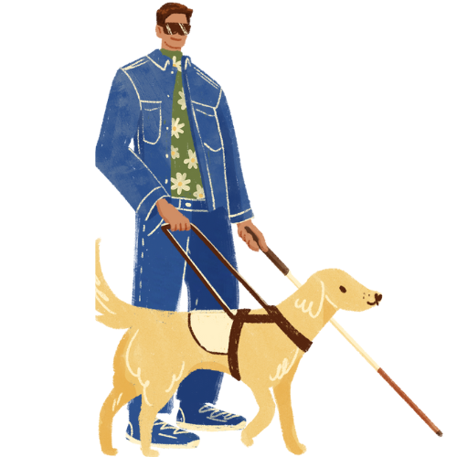

We're here to make
parks accessible for everyone
We empower our neighbors with disabilities to find outdoor spaces that are suitable for them and cater to their needs. You can find parks that are wheelchair accessible, have accessible restrooms, and more. We believe that everyone should have the opportunity to enjoy the outdoors.
Find Parks
